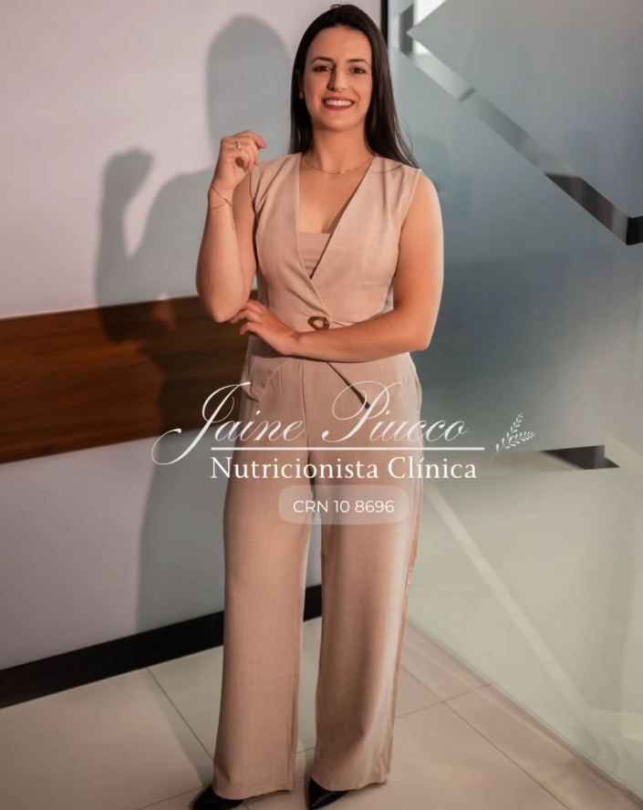
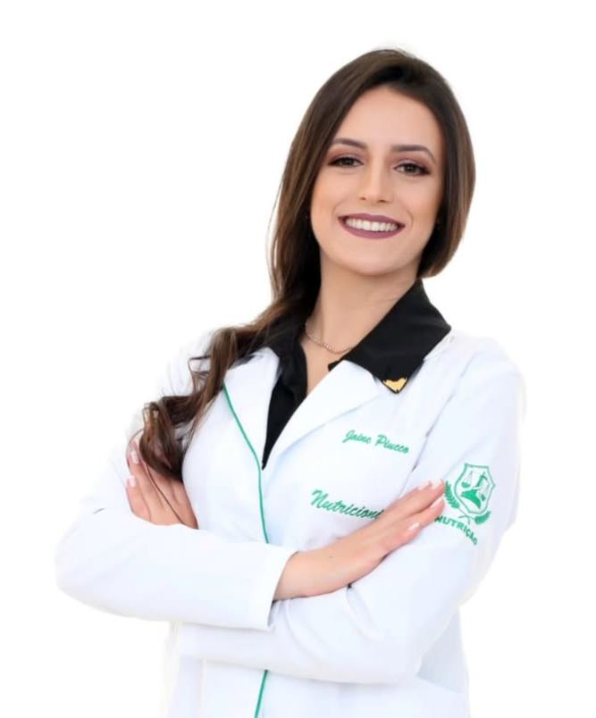
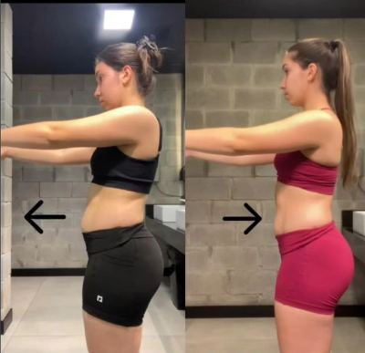
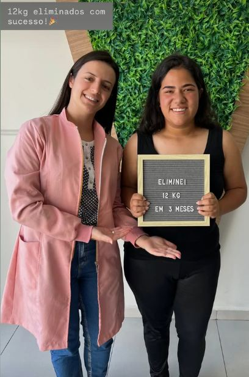
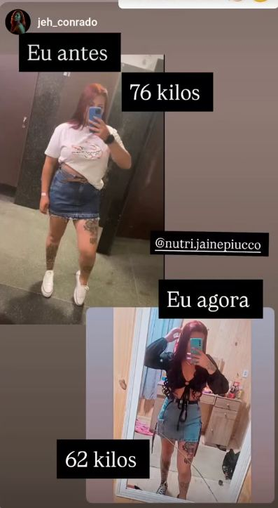
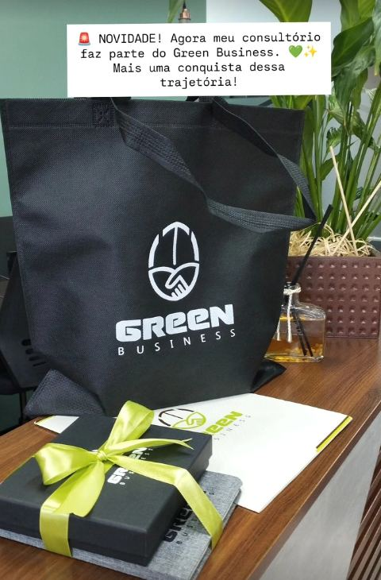

Atendimento individualizado para quem quer perder peso, ganhar massa magra e construir hábitos que se sustentam — sem dietas restritivas, sem culpa.
Marcar minha consulta

Sou a Jaine Piucco, nutricionista clínica com especialização em nutrição clínica e foco em comportamento alimentar. Acredito que resultado de verdade vem quando o plano alimentar cabe na sua rotina real — e não o contrário.
Meu trabalho une emagrecimento saudável, ganho de massa magra e acompanhamento comportamental, para que cada mudança feita hoje continue valendo daqui a um ano.
O acompanhamento é sempre individual — a ênfase em cada frente muda de acordo com o seu momento.
Redução de peso com estratégia individualizada, sem restrição extrema e sem efeito sanfona.
Estratégia nutricional alinhada ao treino, para compor um corpo mais forte, não só mais leve.
Trabalho a relação com a comida — gatilhos, ansiedade e rotina — para o resultado se manter.
Cada história tem seu próprio ritmo — os números abaixo são de pacientes reais, com autorização de uso.

Mudança visível na postura e na região abdominal com reeducação alimentar associada ao treino.
"Sim, foram dez quilos — e sim, hoje eu me sinto muito bem." Paciente acompanhada por Jaine Piucco.

Resultado em 3 meses de acompanhamento, celebrado ao lado da nutricionista no consultório.

Trajetória completa de transformação, com acompanhamento nutricional contínuo do início ao objetivo alcançado.
Resultados variam de pessoa para pessoa e dependem de adesão, histórico de saúde e acompanhamento clínico individual.

Mais uma conquista dessa trajetória: um compromisso com práticas mais conscientes também na forma como o consultório funciona no dia a dia.
Conte um pouco do seu momento e receba um retorno direto no WhatsApp para agendar sua consulta.